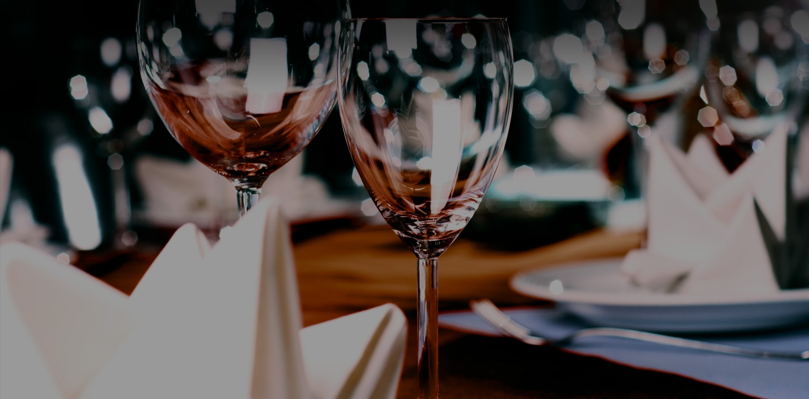
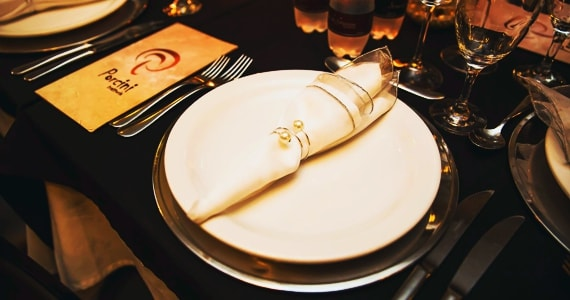

Almoço em família
Uma ocasião para compartilhar o menu italiano.
Almoço em família, evento empresarial ou jantar romântico.

À mesa
Uma ocasião para compartilhar o menu italiano.
Uma mesa para encontros de trabalho.
Uma escolha para celebrar a dois.

Adega
Uma adega no subsolo, com teto de vidro visível no hall de entrada.
Conhecer o PorciniVisita e reservas
Reservas somente por telefone.
+55 (41) 3023-5117+55 (41) 3022-5115Rua Buenos Aires 277